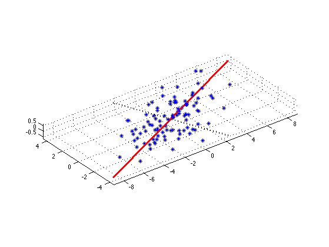
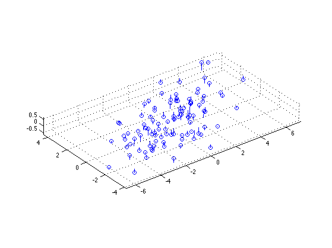
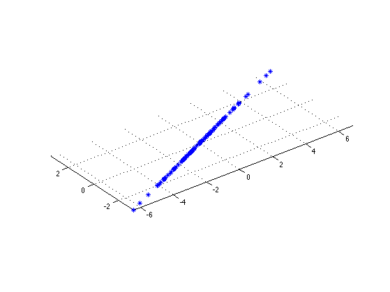
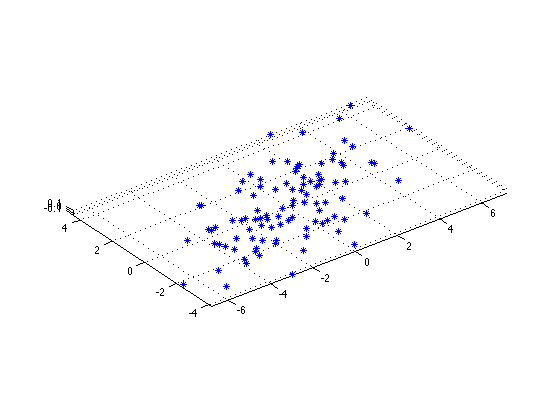

Project 3D data onto a 2D basis using PCA
Based on an example by Hamid Bolouri
% This file is from pmtk3.googlecode.com setSeed(0) n = 100; d = 3; %Sigma = diag(sqrt([10,2,0.5])); Sigma = diag([10,2,0.1]); model = struct('mu', zeros(1, d), 'Sigma', Sigma); X = gaussSample(model, n); % rotate the data alpha = 30*pi/180; R = [cos(alpha) -sin(alpha) 0;... sin(alpha) cos(alpha) 0;... 0 0 1]; X = X*R'; X = centerCols(X); [W, Z, evals, Xrecon2, mu] = pcaPmtk(X, 2); Xrecon1 = Z(:,1)*W(:,1)' + repmat(mu, n, 1); figure; plot3(X(:,1), X(:,2), X(:,3), '*'); grid on; hold on w=W(:,1);sf=10;h=line([-sf*w(1) sf*w(1)], [-sf*w(2) sf*w(2)],[-sf*w(3) sf*w(3)]); set(h,'color','r','linewidth',3); w=W(:,2);sf=5;h=line([-sf*w(1) sf*w(1)], [-sf*w(2) sf*w(2)],[-sf*w(3) sf*w(3)]); set(h,'color','k','linewidth',3,'linestyle',':'); axis equal printPmtkFigure pca3dData figure; plot3(X(:,1), X(:,2), X(:,3), 'o'); grid on; hold on n = size(X,1); for i=1:n line([Xrecon2(i,1) X(i,1)], [Xrecon2(i,2) X(i,2)], [Xrecon2(i,3) X(i,3)]); end grid on axis equal figure; plot3(Xrecon1(:,1), Xrecon1(:,2), Xrecon1(:,3), '*'); grid on axis equal printPmtkFigure pca3dProj1d figure; plot3(Xrecon2(:,1), Xrecon2(:,2), Xrecon2(:,3), '*'); grid on axis equal printPmtkFigure pca3dProj2d   